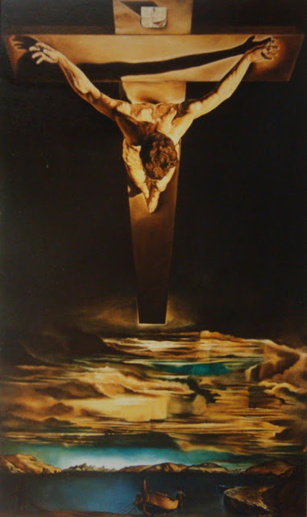
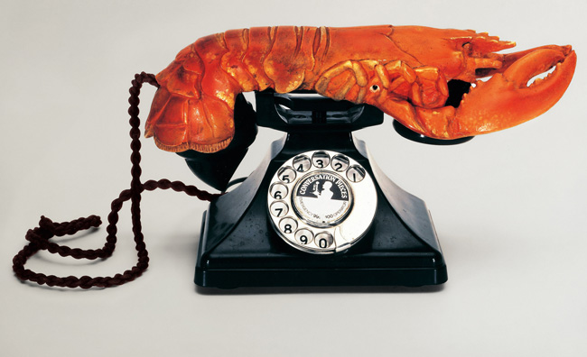
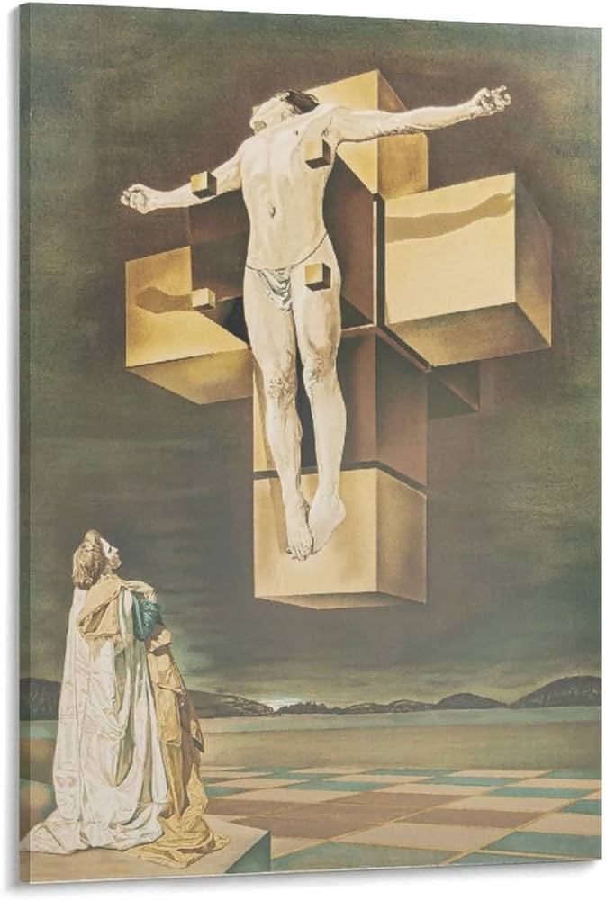
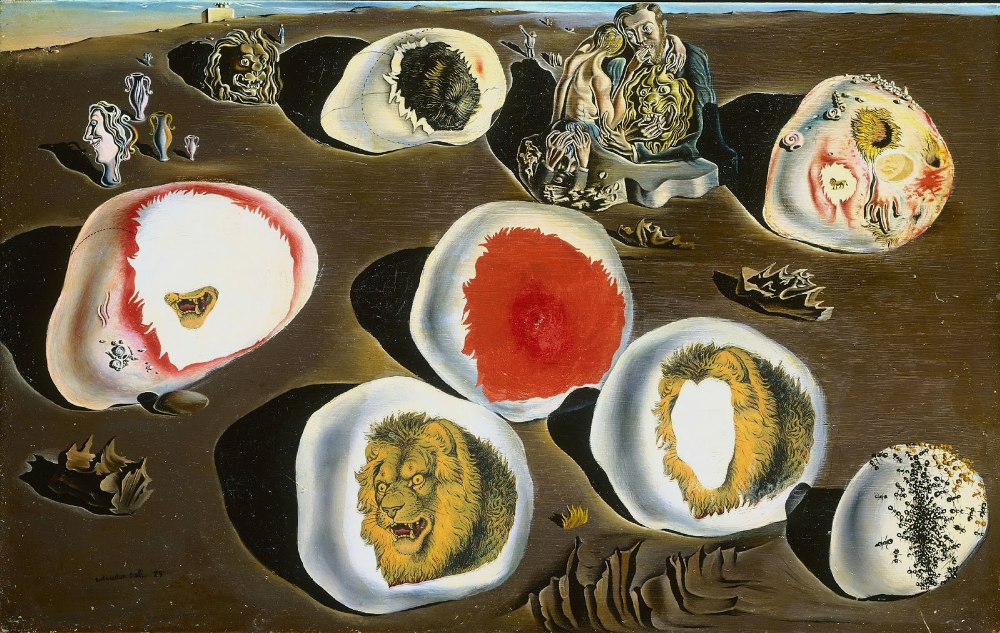
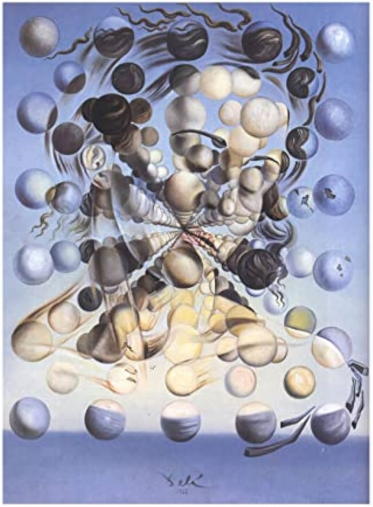
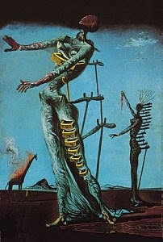

salvador dalì
Con grande dispiacere del padre, Salvador Dalì non porta a termine gli studi, viene espulso dall’accademia per contestazioni nei confronti dei docenti. Libero dagli impegni accademici compie però nel 1926 il primo viaggio a Parigi, dove si reca a trovare Picasso prima ancora di visitare il Louvre. Tornato in patria si dedica con l’amico Buñel alla realizzazione de Un chien andalou. Torna a Parigi nel 1929, accompagnato da Mirò, dove trova ad attenderlo l’intero gruppo dei surrealisti.





